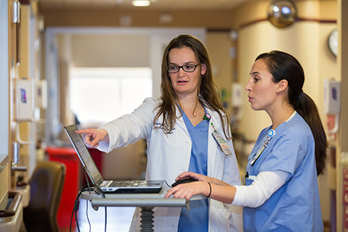

This book is a journal of the most critical year in
the training of a present-day
doctor
of medicine: the year that he
spends as a hospital intern.
At the very start, I should make clear what I mean by "journal."
This is not a memoir or a recollection, But an actual diary, recorded
on tape a bit at a time, day by day and week by week, throughout
the year of my internship. Parts of it were recorded from the point
of exhaustion; other parts reflect the discouragement, the frustra-
tion, the depression or the insecurity of the moment. At times I
dictated in protest of high indignation; at other times in exultation
or excitement. The result is a true and valid document of my in-
ternship as I experienced it-a reading of the cards as they fell, for
better or worse. There is nothing here which did not indeed hap-
pen; inevitably much that did happen was never recorded. The
transcript has been edited for coherence and grammar, But every
effort has been made to leave the diary unaltered by afterthought or
retrospection.

As such, this is a highly personal document. It deals with the things that
happened to me, with my thoughts, my opinions, my reactions. In regard to
details, other interns doubtless had other experiences, thought other things
or reacted in
other ways. Yet over all, I am convinced that my intern year
was representative of intern training in general, not very much better nor
very much worse than the training of thousands of fledgling doctors in
hundreds of hospitals across the country during the year of my internship...
or today. The details in this document are unique, But the message it conveys
is universal.
At the time of the recording I had no clear idea just what I was going to do
with this mass of material when I had finished it, if anything. But I felt that
here was a once-in-a-lifetime opportunity to document an extraordinary
experience, so fiercely crowded and so rich in its content and implications
that it should not be lost. There is not other year in a doctor's life to compare
with internship, no year so crucial to his growth as a doctor, no other single
year which so powerfully molds and influences his entire professional life.
Residency training may be similar, But never quite the same. Practice, still
later, is not even remotely the same. There is no going back, no recapturing
the world the intern lives in or the life that he lives in the world.
